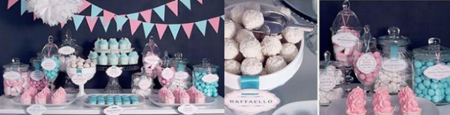

Столы со сладостями или так называемые Candy bar (от англ. Сandy — сладость) уже давно стали неотъемлемыми атрибутами на различных торжествах. Наибольшее распространение получили угощения, приготовленные по случаю свадеб, дней рождений и юбилеев, для оформления которых были придуманы и реализованы тысячи восхитительных идей. В сладкой зоне гостям предлагаются не только традиционные лакомства, такие как торт и пирожные, но и более интересные и необычные, например, французские макароны, капкейки, печенье, меренга или натуральный зефир. В первую очередь в оформлении Candy bar делается на эстетическую красоту. Такой уголок на вашем празднике ни в коем случае не останется незамеченным Вашими гостями. Для создания Candy Bar мы используем вазы, горки, тарелочки различной формы, конфетницы, баночки. Сладкий уголок украшается в общей стилистике праздника лентами, стикерами, свечами и цветами. Также рядом со сладостями гости могут найти бумажные пакетики с атрибутами праздника, в которые можно положить конфетки и взять их домой. То же относится и к Cheese bar. Это - сырный стол с закусками и хлебцами, медом, джемами и фруктами.
Cupcakes (капкейки) - это маленькие кексы размером с кофейную чашку, отсюда и их название. Есть множество вариантов их украшения: мастика, взбитые сливки, различные посыпки - от мятного драже до мармеладной ленты. На капкейках можно сделать любую надпись или изображение.
Macarons (макаруны). Эта миниатюрная сладость пришла к нам из Франции. В основе воздушного теста - молотый миндаль, а между двумя половинками печенья - крем или варенье. Благодаря пищевым красителям макарунам можно придать абсолютно любой цвет, которая будет соответствовать вашему празднику.
Muffins(маффины) – внешне напоминают кексы. Бывают с начинкой и различными сладкими включениями (фрукты, ягоды, цукаты).
Печенье имбирное, фисташковое, шоколадное - хрустящее фигурное печенье станет украшением буфета. Оно может быть любой формы и украшено глазурью.
Сandy (сладости) - это традиционная часть кэнди-бара: шоколадные конфеты, карамельки, леденцы, драже, цукаты.
Фруктовые десерты. Фрукты отличная альтернатива сладостям. Ассорти из фруктов отлично дополнит сладкий стол. Как правило фрукты подаются в корзиночках.
Если Вам ближе национальные блюда и традиции, Вы можете использовать местные угощения: пироги, печенья, блины, оладушки, вазочки с различными видами варенья, пирожки и т.д. Здесь нет единых правил и шаблонов, главное, чтобы все это гармонично вписывалось в формат Вашего мероприятия.